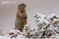
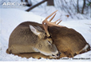
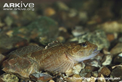
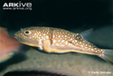

Wolverines

Wolverine feeding on a ungulate carcass, Igor Shpilenok, www.Arkive.org
Food Source
Wolverines are opportunistic feeders who respond quickly to temporarily abundant or easily acquired food. They are morphologically and behaviourally adapted to scavenging with the occasional switch to hunting according to prey availability within different seasons. Carrion tends to be their main food source in winter [24]. Their latin name “Gulo gulo” means huge eater or glutton and its strong jaws and teeth with its huge consumption of carrion have given it the name of “Hyaenas of the north” [24]. Wolverines have been observed in lower areas within the lynx and wolf habitats, for actively foraging on wolf kill activities and they tend to move to higher elevations for activities such as hunting, marking and resting [24] [9]. Evidence supporting this observation included wolverine tracks being longer at higher elevations (implying they are more active at these elevations) as recorded by Dijk et al. (2007). It is known that wolverines seldom kill their own prey during the winter seasons and depend heavily on carrion and possibly cached food [24] [9]. The most frequently consumed prey item in winter months with snow filled fields include caribou, moose and deer due to their supreme abilities to tread swiftly on soft snow [24] [38]. In summer, they often kill voles, ground squirrels, shrews and they also eat berries (evidence was obtained from wolverine stomachs dyed purple from berries they ate) [24] [38]. The less common food sources for wolverines in summer include the snowshoe hares, northern red-backed voles, magpies, hawks and along coastal regions they would eat marine mammal carcasses washed ashore (whales, seals, and walrus) [24] [9]. The less common food sources in spring and summer are eggs of ground-nesting birds and larvae of wasps [24]. Food is eaten immediately, cached or taken to kits. Excess food is cached for later in holes dug in the ground, and it can be hidden within trees as well [38] [27]. Wolverines use their snout to cover the hole with soil and vegetation and often caches are made before the ground freezes before winter. Often, females carry meat within their stomachs and later regurgitate this food for their young [24]. During winter, lactating females with young do not move as much as solitary adult females [4]. They also move their kits often from rendezvous sites, and as these kits mature, they are moved more frequently [4]. When migrating, these animals often restrict movement to feed on nutritious carrion or other high quality and abundant food sources. Wolverine can survive for short periods of time when caribou is absent, however they are unable to reproduce [4]. As a result, researchers predicted that the removal of more effective predators like wolves could have a negative effect on wolverine density due to their being fewer carcasses being available [9].
Nutritional Value
The metabolizable energy (Kcal) of some prey items include: voles (30 Kcal/g DM)m shrews (5 Kcal/g DM), snowshoe hares (1350 Kcal/g DM),squirrels (470 Kcal/g DM), white-tailed deer (5.58 Kcal/g DM) [8].
Arctic ground squirrel, Steven Kazlowski, www.Arkive.org
- Dietary fibre: 17.3%
- Crude protein: 67.5%
- Ether extract: 15.3%
- Ash: 14.2 %
- Gross Energy: 22.11kJ/g
- Dietary fibre: 6.3%
- Crude protein: 45.1%
- Ether extract: 52.9%
- Ash: 1.6%
- Gross Energy: 30.61kJ/g
Nutritional value of ground squirrels [29]:
Nutritional value of white-tailed deer [29]:
White-tailed deer buck resting, Tom and Pat Leeson, www.Arkive.org
Giant Otter

Giant otter eating a pirhana, Nick Gordon, www.Arkive.org
Food Source
Giant otters are mainly piscivores and hunt at the margins of rivers and lakes. Due to the rareness of finding and monitoring a giant otter in the wild, opportunities to study dietary selectivity is limited. Giant captive otters may be a potential source of bias in determining diet from feces samples and determining factors influencing prey choice of wild giant otters however they are the best source to study [7]. Giant otters have a diet consisting of up to 4kg of fish per day and sometimes when fish sources are scarce they will occasionally eat caiman’s and turtles [12]. Generally, fish were fed on from the anterior end, and this was thought to prevent its escape, and also to prevent the spines of the fins from injuring the otter mouth [7]. The most common food source was characins (piranhas) and catfish when low water periods were present during dry seasons [20] [6]. These otters live in areas where the food source is relatively constant all year round, however they still feed opportunistically [20]. They tend to prefer large fish over smaller fish (high-energy prey species over low energy species) and capture the most abundant species in the water [7]. The fat content varies dramatically between fish species and also between seasons within species. For instance, the fish at the end of a migration season will have very little fat content; however fish immediately prior to the migration season will have increased fat content [7]. Feeding ecology of these animals is highly dependent upon seasonal migrations of fish populations [12].
Nutritional Value
Few findings have been researched on the nutritional values of giant otters; however the sea otter model for the giant otter nutritional values will be used instead to model the catfish and pirhana nutritional values.
- Crude protein: 56%
- Ether extract (fat): 41%
- Ash (minerals): 2.3%
- Carbohydrates: considered negligible
- Metabolizable Energy: 674 Kcal/100g
- ** take note, an 18kg giant otter will need 500g bullhead fish per day to meet its energy requirements***
- Crude protein: 51%
- Ether extract (fat): 36%
- Ash (minerals): 3.8%
- Carbohydrates: considered negligible
- Metabolizable Energy: 6.35 Kcal/100g
Nutritional values of the Bullhead Fish [22]:
FBullhead fish, David Boag, www.Arkive.org
Nutritional value of Puffer fish [22]:
Pufferfish, Keoki Stender, www.Arkive.org